Hierarchical reinforcement learning for cost-effective railway microgrid management
- 期刊：Applied Energy
- DOI：10.1016/j.apenergy.2026.128698
- 版本：出版社正式版
- 原文页数：18
- 文本解析：MinerU 4.0.12 / basic / 全文
- 原始 PDF
- 逐页截图
以下为机器解析的原文，未翻译、未改写。公式、表格和双栏阅读顺序可能存在识别误差，请以原始 PDF 和逐页截图为准。
章节目录
论文首页
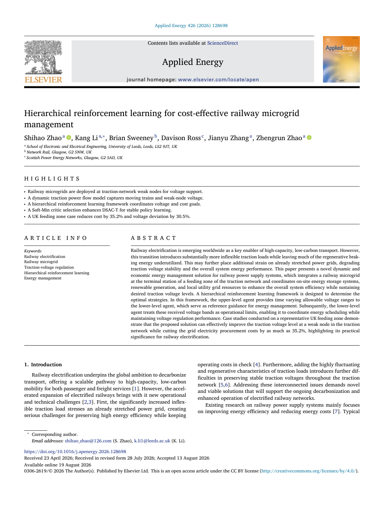
全文
Shihao Zhaoa iD, Kang Li a,∗, Brian Sweeney b, Davison Ross c, Jianyu Zhang a, Zhengrun Zhao a iD
a School of Electronic and Electrical Engineering, University of Leeds, Leeds, LS2 9JT, UK
b Network Rail, Glasgow, G2 5NW, UK
c Scottish Power Energy Networks, Glasgow, G2 5AD, UK
H I G H L I G H T S
• Railway microgrids are deployed at traction-network weak nodes for voltage support.
• A dynamic traction power flow model captures moving trains and weak-node voltage.
• A hierarchical reinforcement learning framework coordinates voltage and cost goals.
• A Soft-Min critic selection enhances DSAC-T for stable policy learning.
• A UK feeding zone case reduces cost by 35.2% and voltage deviation by 30.5%.
A R T I C L E I N F O
Keywords: Railway electrification Railway microgrid Traction-voltage regulation Hierarchical reinforcement learning Energy management
Abstract
Railway electrification is emerging worldwide as a key enabler of high-capacity, low-carbon transport. However, this transition introduces substantially more inflexible traction loads while leaving much of the regenerative braking energy underutilized. This may further place additional strain on already stretched power grids, degrading traction voltage stability and the overall system energy performance. This paper presents a novel dynamic and economic energy management solution for railway power supply systems, which integrates a railway microgrid at the terminal station of a feeding zone of the traction network and coordinates on-site energy storage systems, renewable generation, and local utility grid resources to enhance the overall system efficiency while sustaining desired traction voltage levels. A hierarchical reinforcement learning framework is designed to determine the optimal strategies. In this framework, the upper-level agent provides time varying allowable voltage ranges to the lower-level agent, which serve as reference guidance for energy management. Subsequently, the lower-level agent treats these received voltage bands as operational limits, enabling it to coordinate energy scheduling while maintaining voltage regulation performance. Case studies conducted on a representative UK feeding zone demonstrate that the proposed solution can effectively improve the traction voltage level at a weak node in the traction network while cutting the grid electricity procurement costs by as much as 35.2%, highlighting its practical significance for railway electrification.
1 . Introduction
Railway electrification underpins the global ambition to decarbonize transport, offering a scalable pathway to high-capacity, low-carbon mobility for both passenger and freight services [1]. However, the accelerated expansion of electrified railways brings with it new operational and technical challenges [2,3]. First, the significantly increased inflexible traction load stresses an already stretched power grid, creating serious challenges for preserving high energy efficiency while keeping operating costs in check [4]. Furthermore, adding the highly fluctuating and regenerative characteristics of traction loads introduces further difficulties in preserving stable traction voltages throughout the traction network [5,6]. Addressing these interconnected issues demands novel and viable solutions that will support the ongoing decarbonization and enhanced operation of electrified railway networks.
Existing research on railway power supply systems mainly focuses on improving energy efficiency and reducing energy costs [7]. Typical solutions involve integrating renewable generation into railway power supply systems to provide clean energy supply and reduce electricity procurement costs, or deploying energy storage systems to enhance the utilization of regenerative braking energy, thereby improving overall energy efficiency [8,9]. For example, Chen et al. [10] integrate energy storage systems into railway power supply systems to improve regenerative braking energy utilization and mitigate the energy management challenges caused by the high volatility of traction loads. To accurately assess the carbon emission reductions facilitated by the integration of renewable energy into railway systems, Li et al. [11] propose a carbon emission responsibility accounting framework tailored for DC traction power supply systems. This framework establishes an operable mechanism for quantifying the decarbonization benefits associated with renewable energy integration. The work in [12] further investigates the optimal deployment strategy of energy storage systems and PV generation within the traction network to maximize the utilization of these distributed energy resources, thereby effectively enhancing the energy efficiency of the railway power supply system and minimizing electricity purchasing costs. Although these studies demonstrate the potential for achieving substantial economic and environmental benefits for railway power supply systems, they devote limited attention to traction voltage regulation. Given that traction voltage directly impacts the performance of electric trains, it represents a critical aspect in the energy management of electrified railway systems [13,14].
Recent advances in smart grid technology have spurred the use of microgrids to coordinate distributed energy resources, thereby smoothing voltage profiles and reinforcing overall grid stability [15]. For example, Sun et al. [16] propose a voltage regulation scheme for all-electric ships operating within a port microgrid. This scheme employs a centralized microgrid controller to coordinate the ships’ load demands with PV generation, thereby achieving optimal voltage regulation while effectively reducing power losses. The authors in [17] propose a stochastic optimization strategy for voltage control in a distribution network integrated with microgrids comprising PV generation and electric vehicles. The results demonstrate that microgrid integration can effectively coordinate distributed energy resources, thereby mitigating voltage imbalance across the system. In [18], the microgrids integrated with shared energy storage systems are utilized to provide voltage regulation services for the distribution network. The results confirm that the integration of shared storage can further enhance the economic efficiency of energy scheduling and voltage regulation performance in distribution networks. The effectiveness of microgrid technology in energy management is equally applicable to railway power supply systems. The integration of microgrids can facilitate the coordinated utilization of distributed energy resources and further optimize power flow distribution within traction networks, thus offering the potential to enhance traction voltage quality alongside energy scheduling.
| Nomenclature | VBGA | Variance-Based Gradient Adjusting. |
| A. Abbreviations (Alphabetically) |
| AC | Alternating Current. | | B. Key Parameters and Variables (Alphabetically) |
| DC | Direct Current. |
| Binary variable, battery charging state. |
| DDPG | Deep Deterministic Policy Gradient. |
| Binary variable, battery discharging state. |
| DERs | Distributed Energy Resources. |
| Admittance matrix of traction network. |
| DQN | Deep Q-Learning Network. |
| Per-unit-length impedance of traction network. |
| DSAC | Distributional Soft Actor-Critic. |
2f | Electricity rates of the local power grid. |
| EMD | Empirical Mode Decomposition. |
| Electricity rates of the traction network. |
| EVS | Expected Value Substituting. |
| Battery stored energy. |
| HRL | Hierarchical Reinforcement Learning. |
| Non-traction demand. |
| MDP | Markov Decision Process. |
| Battery charging power. |
| OPEX | Operating Expenditure. |
| Battery discharging power. |
| PV | Photovoltaic. |
| Import power from local power grid. |
| RBE | Regenerative Braking Energy. |
| PV power generation. |
| REG | Renewable Energy Generation. |
| Traction demand. |
| RL | Reinforcement Learning. |
| Import power from feeder station. |
| RPSS | Railway Power Supply System. |
| Battery state of charge. |
| SD | Standard Deviation. |
| Traction voltage at railway microgrid node. |
| TD3 | Twin Delayed Deep Deterministic Policy Gradient. |
| Upper level agent upper voltage reference limit. |
| TVDL | Twin Value Distribution Learning. |
| Upper level agent lower voltage reference limit. |
While microgrid technology could enhance the flexibility and efficiency of railway power supply systems, it also introduces growing complexities in energy management. The dynamic nature of train operations, the fluctuation of traction loads, and the intermittency and uncertainty of renewable energy generation pose significant challenges for traditional model-based optimization methods, including deterministic optimization methods [19] and heuristic algorithms [20], in achieving reliable solutions. Reinforcement Learning (RL), a data-driven optimization technique, allows an agent to learn optimal policies through direct interaction and trial-and-error with its environment, thereby obviating the need for an explicit and precise mathematical model of the system [21]. This inherent characteristic grants RL distinct advantages in tackling decision-making problems that involve high degrees of nonlinearity, significant uncertainties, and complex environmental dynamics [22]. Therefore, applying RL to energy management in railway power supply systems can effectively overcome the limitations of conventional approaches and deliver more flexible and intelligent solutions.
Leveraging the inherent merits of reinforcement learning, some recent studies have employed RL to explore optimal energy management strategies for railway power supply systems. In [23], a deep-Q-network (DQN) energy management strategy is developed to improve the energy efficiency of the railway power supply systems. By employing reinforcement learning for the intelligent scheduling of batteries integrated at feeder stations, the proposed strategy effectively improves the utilization of both renewable generation and regenerative braking energy. To address the oversight of thermal impacts in existing energy management for Hydrogen Fuel Cell train systems, Jiang et al. [24] propose a collaborative energy and thermal management strategy based on deep reinforcement learning. By leveraging the adaptability of DRL to environmental dynamics, this strategy effectively overcomes the limitations of traditional methods in handling the complex coupling between energy and thermal management issues. However, the strategies from these studies still focus largely on improving energy efficiency, failing to address the vital need for traction voltage regulation.
To address the aforementioned research gaps, this paper proposes a hierarchical reinforcement learning framework for coordinated energy scheduling and voltage regulation in a railway power supply system integrated with a railway microgrid. Different from many existing railway energy management studies that mainly treat traction demand as an aggregated load, the proposed framework explicitly incorporates the traction network power flow model, where moving train loads, time-varying network conditions, and weak-node voltage responses are all considered. This enables the proposed framework to move beyond purely energy-efficiency-oriented scheduling by directly evaluating the impact of integrated microgrid operation on power flow distribution and supporting voltage regulation at weak traction network nodes. In the proposed hierarchical framework, the upper-level agent dynamically determines the desired traction voltage band according to the operating condition of the traction network, while the lower-level agent schedules the microgrid energy resources under the supervisory voltage references. As a result, the proposed method provides a coordinated mechanism to balance economic energy scheduling with voltage regulation support for weak traction network nodes, thereby offering effective operational support for the traction network.
A critical distinction exists between the present study and our earlier work in Ref. [3], despite their shared contextual basis in railway microgrid integration. Ref. [3] centers on coordinated energy scheduling at a co-phase feeder station, with the dual aims of minimizing operational expenditures and alleviating three-phase voltage imbalance arising from single-phase traction loads. The present work, by contrast, focuses on co-ordinated scheduling and voltage regulation for weak nodes within the traction network. To address this, this study explicitly constructs a traction power flow model that captures the temporal variability of train loads and network conditions, and also introduces a hierarchical reinforcement learning framework designed to reconcile economic dispatch with weak-node voltage support. Notably, the power flow model, the regulation scheme, and the hierarchical algorithm are all novel developments that have not been previously presented. An overview of the proposed framework is illustrated in Fig. 1, and the main contributions of the paper are summarized as follows:
-
Physical Architecture Innovation: To support the further electrification of railways, this study proposes the integration of railway microgrids at traction-network weak nodes. By incorporating distributed energy resources and energy storage at these critical locations, the proposed microgrid architecture goes beyond simply supplementing the existing power supply. It also enhances operational flexibility, improves energy efficiency, and provides active traction-voltage support.
-
High-Fidelity Modeling: Unlike many existing studies that represent traction demand as an aggregated demand profile, this study develops a traction-network-aware energy management formulation by explicitly incorporating a dynamic traction power flow model. The proposed formulation captures moving train loads, time-varying network operating conditions, and weaknode voltage responses, thereby enabling a network-consistent and operationally realistic assessment of the impacts of railway microgrids on the wider traction power system.
-
Hierarchical Decision-Making Framework: To address the resulting operational complexity, this study introduces a hierarchical reinforcement learning framework that decomposes the energy management problem into strategic upper-level decision-making and operational lower-level control. This two-tier structure coordinates two closely coupled yet potentially conflicting objectives, namely traction-voltage regulation and economic energy scheduling, within a unified optimization framework.
-
Robust Algorithmic Advancement: To improve learning stability and reliability in highly nonlinear and time-varying traction environments, this study enhances the DSAC-T algorithm by introducing a Soft-Min-based critic selection strategy. By replacing the conventional hard-minimum critic selection with a smoother approximation, the proposed method mitigates abrupt value estimation changes, thereby improving training stability and supporting more robust policy learning under dynamic railway operating conditions.
The rest of this paper is organized as follows: Section 2 formulates the power flow and energy scheduling models for the railway power supply system integrated with a railway microgrid. Section 3 details the proposed hierarchical reinforcement learning framework. Case studies and corresponding analyses are provided in Section 4. Finally, Section 5 concludes the paper.
This section provides the mathematical basis for the proposed framework. Section 2.1 describes the railway microgrid and formulates the energy management model for the railway power supply system integrated with the microgrid. Section 2.2 subsequently derives a power flow model specifically designed for the traction network, which enables dynamic computation of nodal electrical states and serves as the basis for quantitatively evaluating the effectiveness of the proposed energy management framework.
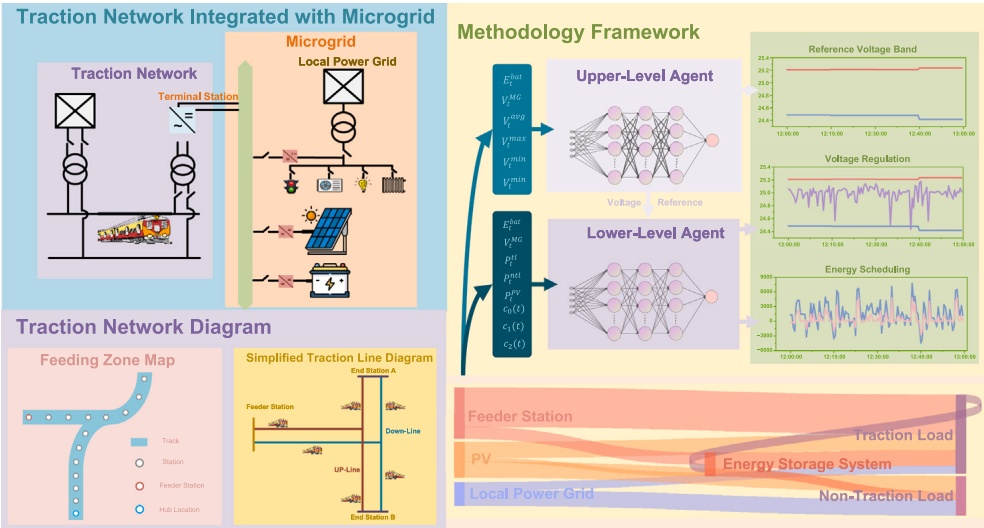
Fig. 1. System configuration diagram.
2.1 . Railway microgrid configuration and energy management system modeling
As shown in Fig. 1, the proposed railway microgrid is located at a terminal station (or a weak node) of a traction feeding zone. It functions as a nexus that integrates the traction network with local distributed energy resources (DERs) and local utility grid. As illustrated in Fig. 1, the microgrid integrates PV generation, an energy storage system, and the local utility grid to support the traction network. The PV unit and the local grid serve as complementary power sources to the existing feeder station, while the energy storage system can effectively enhance supply– demand flexibility. By transforming the traction network from a passive, single-source supply system into an active multi-source system, the proposed railway microgrid can provide voltage support at the weak nodes of the traction network, enhance supply flexibility, and improve overall energy efficiency.
It should be noted that the primary aim of this study is to examine the microgrid support for the traction network. Accordingly, the microgrid is modeled as an aggregated node interfaced with the traction network, through which it affects the traction network power flow and the associated energy supply. The resulting energy management model for the railway power supply system integrated with the proposed microgrid is presented below.
2.1.1 . Objective function
The objective function is formulated to simultaneously minimize the system operating cost, suppress the traction voltage fluctuation, and penalize potential voltage limit violations:
where and denote the power drawn from the local grid and the traction network, respectively. and correspond to the electricity tariffs for these two supply sources. The decision interval of the proposed model, denoted by is set to 30 s. 𝑤 is the weighting coefficient. denotes the traction voltage at the traction network node where the microgrid is connected, and represents the rated operating voltage of the traction network. The first term in the objective function represents the total operating cost. The second term is the squared voltage deviation from the reference voltage, which is used to suppress voltage fluctuations under normal operating conditions. The coefficient 𝑤 is the weight assigned to this voltage deviation penalty and determines the trade-off between economic operation and voltage fluctuation suppression. In this study, this parameter is set to 10, and a sensitivity analysis concerning this choice is provided in Section 4. The third term is the supervisory reference-band violation penalty. Specifically, and denote the lower and upper voltage reference bounds determined by the upper-level agent, respectively. These reference bounds are constrained within the admissible voltage range specified by EN 50,163, where 𝑉 and 𝑉 denote the lower and upper voltage limits, respectively [13]. The relationship between the EN 50,163 voltage limits and the supervisory voltage reference bounds is shown in (3), which ensures the voltage reference band selected by the upper-level agent remains standard-compliant. The coefficient is chosen to be sufficiently large to enforce a heavy penalty when the actual traction voltage falls outside the supervisory reference band.
It is worth emphasizing that the proposed formulation describes a continuous control problem. The decision variables are all continuous, specifically including the traction voltage reference bounds prescribed by the upper-level agent and the battery charge/discharge power selected by the lower-level agent. The battery power is represented as a signed continuous variable, with positive and negative signs indicating charging and discharging, respectively. As for the other terms in (1), such as and , they are not independent discrete or mixedinteger variables; rather, they are continuous variables obtained through the power balance and traction power flow calculations following the execution of the control actions.
2.1.2 . System constraints
The traction network, augmented by the railway microgrid, is required to comply with the following constraints: (i) power balance, (ii) grid capacity and security, (iii) energy storage operating limits, and (iv) renewable generation availability.
Power Balance: This constraint ensures that the total power supply meets the total load demand within the electrified railway system. The constraint can be defined as:
where the power sources mainly consist of feeder stations, the local grid, PV generation, and battery discharging. The load demands primarily include traction loads, non-traction loads, and battery charging.
Grid Capacity and Security: This category of constraints requires that the power supplied by the feeder station and the local grid must not exceed their respective capacity limits, and that the voltages in the traction network must remain within the prescribed bounds:
(7)
where represents the maximum power supply capacity of the feeder station, while denotes the maximum available capacity of the local grid.
Energy-Storage Operation: Battery state-of-charge (SoC) and charge/discharge rates are bounded within prescribed limits, which are represented by:
where represents the SoC of the battery at time step 𝑡 and refers to the rated capacity. and indicate the maximum allowable charging and discharging power, respectively. and are binary variables, and (11) ensures that the energy storage system cannot charge and discharge simultaneously. and 𝑆 specify the desired SoC boundaries.
PV Generation Availability: The available capacity of PV generation can be calculated as follows [25]:
where denotes the number of PV modules, and is the rated power output of each PV module. is the measured solar irradiance at interval 𝑡 and refers to the reference irradiance. is the temperature derating coefficient of the PV array. The module temperature is obtained from (15), where and correspond to the ambient and nominal operating temperatures, respectively.
2.2 . Traction network power flow model
The traction network power flow model developed in this paper is designed to emulate the network’s electrical behavior under dynamic train operating conditions. Fig. 2 presents a concise overview of the traction network configuration considered in this study. Specifically, Fig. 2(a) is the equivalent circuit diagram of the adopted direct feeding system, serving as the foundation for formulating the admittance matrix [26]. Fig. 2(b) shows the simplified network topology, clarifying how different node types are interconnected. The following sections describe the admittance matrix formulation and subsequent power flow calculations in detail.
The traction network can be viewed as a system of interconnected nodes and branches. As shown in Fig. 2(b), nodes in the network include: i) the slack bus, which supplies the system’s power, and provides a reference voltage ii) the cross-connection point, an electrical junction that links the up-line and down-line feeders to improve supply reliability, load balancing, and fault isolation; iii) dynamic train nodes, modeled as time-varying mobile power exchange points, where trains draw traction power from or inject regenerative braking power into the traction network; and iv) the railway microgrid node, which coordinates distributed energy resources to support traction network operations by enhancing traction power supply, regulating voltage profiles, and increasing power supply flexibility.
For the traction network shown in Fig. 2(a), the nodes partition the traction network into distinct segments. The impedance of a line segment between two nodes is then obtained by multiplying the per-unit-length impedance by the segment length. In this way, the impedances between nodes in the traction network shown in Fig. 2(a) can be represented as matrix, accounting for the self and mutual impedances between the contact wire (conductor c) and the running rails (conductor r), as shown below.
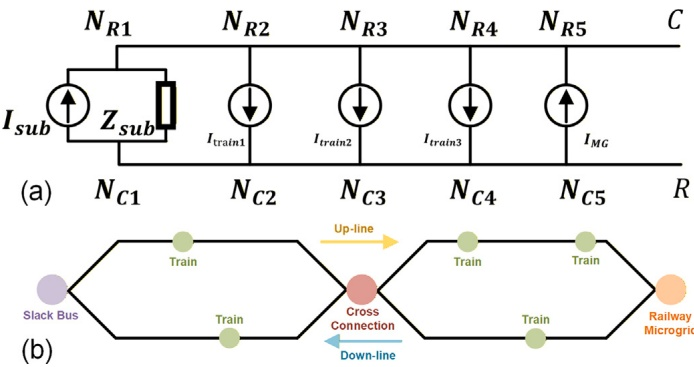
Fig. 2. Traction network diagram for power flow modeling. (a) Equivalent circuit of the direct-feeding architecture for admittance matrix formulation; (b) simplified topology-level schematic of the traction network.
where denotes the per-unit-length impedance and represents the impedance of a specific segment. and denote the self-impedances of the contact wire and the running rails, respectively, whereas and are the mutual impedances between these conductors. Based on these impedance calculations, the entire traction network, including dynamically positioned trains, can be represented at each time step 𝑡 by a system admittance matrix:
where is a submatrix obtained as the inverse of its corresponding impedance, i.e., . For any physical node the corresponding diagonal entry in the admittance matrix equals the sum of the admittances of all branches incident on node plus any shunt admittance at this node, as expressed in (20), where denotes the set of nodes directly connected to 𝑘. An off-diagonal entry is the negative mutual admittance between nodes 𝑘 and when no direct connection exists between the two nodes, is a null matrix.
As the trains move along the track, the sectional partitioning of the traction network is updated dynamically, thereby modifying the systemwide admittance matrix at each simulation time step.
2.2.2 . Power flow solution
A Newton-Raphson algorithm is employed to solve the power flow of the traction network, determining the complex voltage of all nodes at each time instant [27]. The problem is formulated using current mismatch equations. For each non-slack electrical node the injected current must equal the current flowing into the network from that node:
where is the complex voltage of electrical node For a train node the injected current is computed from its power demand and the voltage difference between the contact wire and the running rails at this node
where and represent the directions of current flow at node on the contact wire side and on the running rail side, respectively. It is worth noting that, in the implemented traction power-flow model, trains are not assigned to predefined fixed electrical nodes or approximated to the nearest node. Rather, every active train is modeled as a moving load node. For each power-flow calculation interval, the equivalent electrical position of a train is derived from its average location over that interval. With this updated equivalent position, each active train is treated as a load node in the appropriate traction network branch, and the network admittance matrix is updated correspondingly. Consequently, train movement is captured through a continuously updated moving-load formulation rather than a fixed-node approximation.
Based on (22)-(24), the Newton-Raphson method iteratively computes the nodal voltage vector. At each iteration, the current mismatch for every non-slack electrical node 𝑝 is given by the following expression, where denotes the intermediate iterative nodal voltage vector:
Then a Jacobian matrix , with elements can be introduced as follows:
Let and be the partial derivatives of the load current with respect to the contact wire and rail voltages of node the non-zero partial derivatives in (26) are given as:
These partial derivatives constitute the corresponding entries in . Then, the voltage corrections satisfy the following equation:
and the nodal voltages are then updated by:
The iterations based on the above equations continue until the maximum current mismatch magnitude falls below a predefined tolerance. Once convergence is achieved, the complete set of complex nodal voltages at all nodes on the contact wire and rail conductors throughout the network can be determined.
3 . Proposed hierarchical reinforcement learning framework
In this study, a hierarchical reinforcement-learning (HRL) framework is proposed to concurrently optimize traction-voltage regulation and resource coordination in railway power supply systems with microgrid integration. Given the nonlinear, time-varying, and power flow-coupled nature of the formulated scheduling problem, reinforcement learning is adopted to learn an online feedback control policy from a high-fidelity traction-network simulation environment. To improve the stability and robustness of policy learning, a Soft-Min Distributional Soft Actor–Critic with three refinements (SM-DSAC-T) algorithm is developed as the core learning algorithm of the proposed HRL framework. This section first discusses the motivation for adopting reinforcement learning in the considered nonlinear traction power flow-constrained scheduling problem. The problem is then formulated as a Markov decision process (MDP), followed by the detailed mathematical formulation of the proposed SM-DSAC-T algorithm.
3.1 . Rationale for reinforcement learning
To solve the railway microgrid energy scheduling problem formulated in this paper, a reinforcement learning (RL)-based solution framework is adopted. The use of RL is not motivated by the absence of a physical system model. On the contrary, as described in Section this study establishes a detailed mathematical representation of both the traction network and the railway microgrid. This model is used as a high-fidelity simulation environment for offline training and performance evaluation, rather than as a directly tractable online optimization model. The main motivation for employing RL lies in the difficulty of embedding the complete nonlinear traction power flow formulation into a real-time model-based optimization routine.
From an optimization perspective, the problem considered in this study is a continuous, nonlinear, time-varying, and non-convex sequential decision-making problem. Although the number of explicit control variables is limited, each control action affects system operation through nonlinear and time-varying traction power-flow evaluations. In these evaluations, trains are represented as moving electrical nodes, whose number and equivalent electrical positions may vary between consecutive calculation steps. As a result, branch lengths and the network admittance matrix need to be updated frequently. The complexity is further increased by regenerative braking, which introduces rapid bidirectional power fluctuations, and by the constant-power load characteristic of trains, which couples train current injection with the unknown pantograph voltage. These factors make the overall scheduling problem, when coupled with traction power-flow calculations, inherently nonlinear, time-varying, and non-convex.
Directly embedding this formulation into a conventional modelbased optimization framework would require repeatedly solving a non-linear and time-varying problem over the prediction horizon, resulting in a substantial online computational burden. By contrast, the proposed RL-based framework uses the same high-fidelity nonlinear model during offline training and performance evaluation, while online execution only requires forward passes through the trained neural networks. This avoids solving complex non-convex optimization problems in real time. Therefore, reinforcement learning is adopted in this work as a practical solution that preserves nonlinear physical fidelity during training and validation, while shifting the main computational burden to the offline stage. This enables efficient real-time deployment under the highly dynamic and time-varying operating conditions of traction power systems.
A Markov decision process (MDP) provides a canonical mathematical framework for sequential decision-making under uncertainty. The MDP of the hierarchical reinforcement learning framework developed in this paper can be expressed as:
and denote the state spaces of the upper-level and lower-level agents, while and denote their corresponding action spaces. The state transition function 个 maps the probability distributions over the successor-state sets. Finally, R and represent the reward function and the discount factor, respectively. Under this hierarchical Markov decision process framework, the interaction mechanism of the upper- and lower-level agents with the environment is illustrated in In conjunction with the constructed environment, the detailed illustrations of the formulated MDP are introduced as follows.
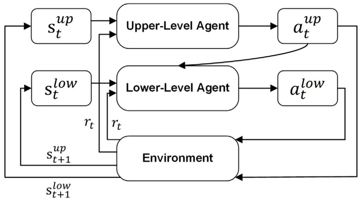
Fig. 3. Interaction mechanism between the proposed hierarchical agent framework and the environment.
State Space: The state space encapsulates the environmental information accessible to the agent. Accordingly, the state vectors for the upper-level and lower-level agents are defined as follows:
For the upper-level agent, the state vector consists of the current time step, the battery energy level, the traction voltage at the traction network node where the microgrid is connected, the current traction demand, and three empirical mode decomposition (EMD)-derived traction voltage features, namely , and Trend , where and denote the first two intrinsic mode functions extracted from the latest sliding-window voltage sequence, which capture recent local oscillatory components of the traction voltage, while Trend represents the residual trend component reflecting the slow-varying baseline within the selected time window [28].
The EMD-derived features are calculated using a causal slidingwindow strategy. Since these features are only used by the upper-level agent, they are updated at the upper-level decision instant rather than at every lower-level simulation step. Specifically, at each upper-level decision instant, the historical sequence of the traction voltage at the MG-connected node over the most recent 15 min is collected with a sampling resolution. EMD is then applied to this local historical voltage sequence to extract the first two intrinsic mode functions and the residual trend component as the voltage features of the upper-level agent. The 15-min sliding-window length is selected to match the supervisory update interval of the upper-level agent. This configuration allows the upper-level agent to observe the voltage oscillation and trend information from the previous control interval, thereby providing auxiliary information for determining the voltage reference limits for the current control interval.
For the lower-level agent, the state vector primarily includes the current time step, the battery energy level, the instantaneous traction line voltage at the MG connected node, the instantaneous traction load demand, PV generation, and the upper and lower voltage reference limits prescribed by the upper-level agent. It should be noted that all elements of these state vectors are normalized prior to being fed to the respective agents.
Action Space: The action space defines the set of all possible decisions the agents can make at each time step. The upper-level agent is responsible for providing the upper and lower voltage reference limits , while the lower-level agent conducts battery power scheduling within the railway microgrid. The actions of the upper-level and lower-level agents can be expressed as:
Reward: The reward is designed based on the objective function of the proposed energy management model, as shown in (1). In the proposed hierarchical framework, a shared system-level reward structure is adopted to coordinate voltage regulation and energy scheduling. It should be noted that this does not mean that the two agents receive exactly the same reward signal at every simulation step. The lowerlevel agent receives the step-wise reward at each 30-s simulation step, corresponding to the immediate effect of the battery charging/discharging action. In contrast, the upper-level agent receives the accumulated reward over its 15-min supervisory control interval, during which the selected voltage reference limits remain fixed. Therefore, the upper-level reward reflects the accumulated effect of voltage reference setting over the supervisory control interval, whereas the lower-level reward reflects the immediate effect of battery scheduling at each simulation step.
Although both reward signals are derived from the same systemlevel objective, the two agents undertake different tasks in the proposed hierarchical framework. The upper-level agent determines the voltage reference limits, while the lower-level agent schedules the battery charging/discharging power under the voltage-guided operating conditions. Their responsibilities are differentiated by their action spaces, state representations, and decision-making time scales. This design enables the shared reward structure to act as a global coordination signal, rather than implying identical optimization roles for the two agents. It also helps avoid potential policy conflicts that may arise when the upper layer is trained only with voltage-related rewards while the lower layer is trained only with cost-related rewards.
The 15-min interval is adopted as the supervisory update interval for the upper-level voltage reference limits, rather than as the physical simulation resolution. This setting is consistent with the commonly used power aggregation time scale in railway traction energy management studies, where traction power assessment is often conducted over a 15- min averaging window [29]. Therefore, the upper-level agent provides a relatively stable supervisory signal for coordinating voltage regulation and energy scheduling, while the lower-level battery scheduling and traction power flow simulation are still conducted at the 30-s resolution to preserve fast traction load dynamics.
To facilitate a clearer understanding of the proposed methodology, Fig. 4 presents the overall flowchart of the hierarchical reinforcement learning framework. As shown in the figure, the proposed method consists of two primary components, namely input collection and hierarchical decision-making. The environmental information is first gathered and structured into the state representations designated for the upperlevel and lower-level agents. Specifically, the upper-level agent receives the decision-interval state alongside the extracted historical voltage features, and generates supervisory voltage reference bounds at a 15- minute interval. These voltage references are subsequently relayed to the lower-level agent as guidance signals. In response to the real-time operating state and the supervisory voltage references, the lower-level agent determines the battery charging/discharging power at a 30-second resolution. In this way, the upper-level and lower-level agents are coordinated through supervisory voltage guidance, enabling the proposed framework to achieve a balanced trade-off between weak-node voltage regulation and energy scheduling.
3.3 . Introduction to SM-DSAC-T
To obtain robust energy management strategies for the railway power supply system, an SM-DSAC-T algorithm is developed to explore the most effective utilization of the railway microgrid to support the traction network. The proposed algorithm is based on the Distributional Soft Actor-Critic with Three Refinements (DSAC-T) framework, which enhances the performance of the popular Soft Actor-Critic (SAC) algorithm by incorporating three core refinements: i) Expected Value Substituting (EVS), ii) Twin Value Distribution Learning (TVDL), and iii) Variance Based Gradient Adjusting (VBGA), effectively improving the stability of the training process [30]. To further enhance the continuity of gradient propagation during training, the proposed SM-DSAC-T algorithm replaces the hard minimum operator employed in DSAC-T’s dual critic selection with a smooth minimum approximation strategy, leading to stronger convergence stability and smoother policy optimization performance. The details of the proposed method are provided below.
3.3.1 . Standard SAC and DSAC-T
The Soft Actor-Critic (SAC) is a popular off-policy algorithm designed to maximize an objective function within the maximum entropy reinforcement learning paradigm. By introducing an entropy regularization term to augment the expected return, the algorithm can maintain a moderate level of stochasticity while pursuing high rewards, thereby further promoting exploration performance [31]. The objective function of SAC is defined as:
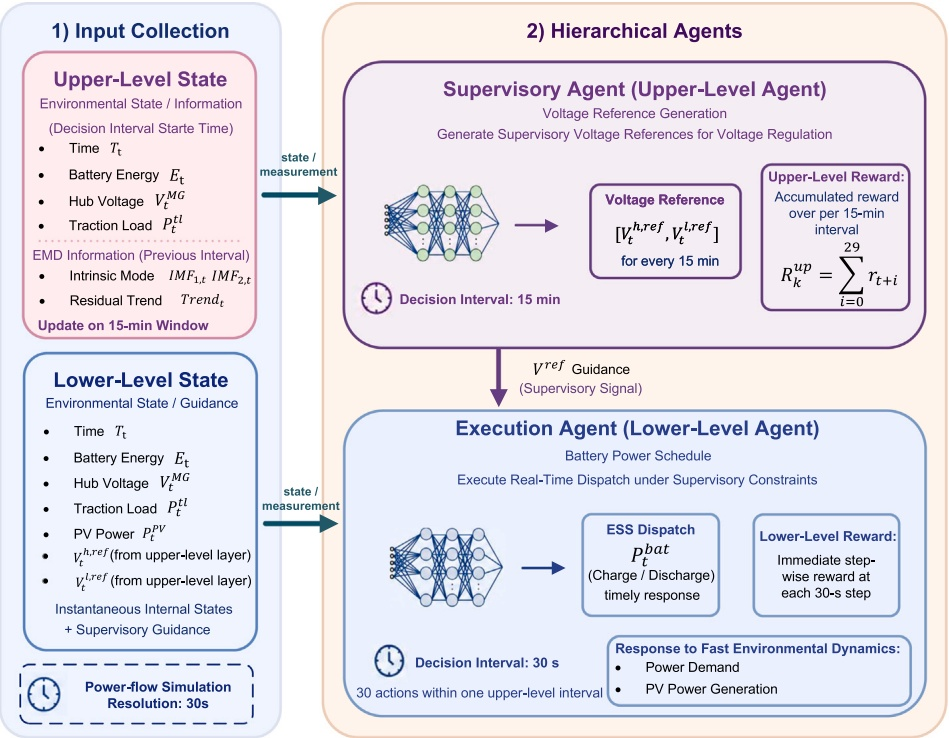
Fig. 4. Overall flowchart of the proposed hierarchical reinforcement learning framework.
where denotes the objective function of the policy which aims to maximize the expected cumulative return augmented with an entropy regularization term. is the discount factor, which is a constant within the interval denotes the policy function, which returns the probability of selecting action 𝑎 when the environment resides in state denotes the expectation taken over the state-action distribution induced by policy represents the immediate reward function, which yields a scalar return obtained by taking action in state is the temperature coefficient that balances reward maximization and exploration. is the policy entropy term and can be defined as:
To optimize this objective, SAC adopts an actor-critic architecture based on the soft policy iteration framework, which primarily comprises two mechanisms: policy evaluation and policy improvement [32]. In the policy evaluation step, the algorithm aims to estimate the soft actionvalue function which corresponds to the expected discounted return plus future entropy bonuses. 𝑄(𝑠, 𝑎) can be defined as:
To mitigate the overestimation bias, SAC employs two parameterized soft Q-functions (critic networks), with parameters denoted as and . These critics are trained by minimizing the soft Bellman residual [31]:
where D denotes the experience replay buffer, utilized to store transition tuples generated during agent-environment interactions. The temporal difference target is computed via the clipped Double Q-learning mechanism, which can be mathematically formulated as [33]:
where denotes the parameters of the target networks. The deployment of target networks in SAC serves to ensure training stability. These networks are not updated via gradient descent but rather by tracking the critic network parameters using an exponential moving average.
Following the value estimation, the policy improvement phase of SAC primarily focuses on updating the policy network parameterized by To enable gradient backpropagation through the stochastic sampling process, the algorithm incorporates the reparameterization trick. Specifically, the actor network outputs a mean vector and a standard deviation , while the action is computed via a deterministic transformation of independent noise, expressed as:
where is a standard Gaussian noise vector and ⊙ denotes the elementwise product. tanh is an activation function that constrains the action within a bounded range. Then, the policy optimization objective is defined as:
3.3.2 . Introduction to DSAC-T
Although SAC has demonstrated superior performance across diverse applications, its point-estimate critic network struggles to adequately characterize environmental uncertainty. Consequently, when applied to environments with highly volatile input data, such as train load demand, SAC may exhibit low sample efficiency and poor training stability.
To address these limitations, Distributional Soft Actor-Critic (DSAC) is developed, which learns the entire distribution of returns defined as instead of a single scalar value. Here, is defined as a Gaussian distribution:
However, DSAC can suffer from training instability arising from high-variance gradients and a strong dependence on reward scaling. To address these issues, the DSAC-T algorithm builds upon DSAC by introducing three specific enhancements [30]:
i) Expected Value Substituting (EVS): In DSAC critic updates, the stochastic target is formulated as:
The direct use of this target for gradient computation leads to high variance. Consequently, EVS in DSAC-T substitutes this stochastic target within the gradient term related to the mean with its deterministic expected value expressed as:
where represents the target critic network parameters. This substitution maintains unbiasedness, as The resultant critic gradient incorporating EVS is:
where represents the objective used to update the critic network in DSAC-T. 𝐶 (⋅; 𝑏) denotes a clipping function whose bounds ±𝑏 are adaptive. and 𝜎 denote the mean and standard deviation of the value distribution predicted by the current critic network, respectively.
ii) Twin Value Distribution Learning (TVDL): TVDL is adopted in DSAC-T to further reduce any remaining overestimation by utilizing a twin-critic setup. This involves maintaining two separate value distributions. During each update step, the target critic yielding the lower estimated mean is chosen for conservatism:
where 𝑖 is an index that identifies the target network providing a more conservative Q-value estimation.
Similarly, the objective for policy optimization is modified to:
iii) Variance-Based Gradient Adjusting (VBGA): VBGA improves DSAC-T’s robustness to fluctuations in reward magnitudes. It achieves this by dynamically adapting the gradient clipping limits and scaling coefficients according to the standard deviation 𝜎:
where 𝜉 serves as the scaling factor associated with the expected standard deviation of the action distribution, and 𝜔 is the expected variance of the 𝑄-value distribution. The comprehensive gradient update for DSAC-T critic network under VBGA is then formulated as:
where 𝜀 is a small constant set for numerical stability.
3.3.3 . The proposed SM-DSAC-T
Although DSAC-T achieves notable improvements, the hard minimum selection mechanism in twin-critic estimates produces discontinuous gradients, which may lead to training instability. The proposed SM-DSAC-T method addresses this by substituting the hard minimum with a differentiable approximation known as Soft-Min, which is defined as:
where is the smoothing parameter that controls the smoothing strength of the Soft-Min operator. A smaller value yields greater smoothing in the twin-critic selection, while a relatively larger 𝛽 value produces a sharper selection. In this study, is determined through a validationbased sensitivity analysis with VBGA enabled. It should be noted that 𝛽 and VBGA play different roles: 𝛽 controls the smoothness of the Soft-Minbased critic selection process, whereas VBGA adaptively scales valuerelated updates to improve learning stability under different reward magnitudes. Consequently, although VBGA can reduce the Soft-Min operator’s sensitivity to fluctuations in reward scale, it does not obviate the need for a suitably chosen
Correspondingly, the Soft-Min targets for critic updates become:
and the resulting critic gradient for Soft-Min DSAC-T is given by:
Accordingly, the policy optimization objective is represented as:
The concise learning scheme of SM-DSAC-T is illustrated in Fig. 5.
3.3.4 . Theoretical properties of the soft-min operator
The following section presents a theoretical analysis of the proposed Soft-Min based critic selection mechanism. First, the Soft-Min operator provides a bounded approximation to the hard minimum. Let m denote the smaller of the two critic estimates, and . Given that the dominant term in the log-sum-exp expression corresponds to the smaller critic value, the following inequality holds:
By taking the logarithm and multiplying by the Soft-Min target satisfies
This bound indicates that the approximation error between the proposed Soft-Min operator and the original hard minimum is upper bounded by log2∕𝛽. As converges to the original hardmin critic target. Therefore, the proposed SM-DSAC-T can be regarded as a smooth extension of DSAC-T rather than a change to its fundamental Bellman backup structure.
Second, the Soft-Min operator improves the smoothness of the twincritic selection. Its derivative with respect to each critic estimate is given by
Since the two derivative weights are non-negative and sum to unity, the Soft-Min operator aggregates the twin critics continuously and in a state-dependent manner, unlike the hard minimum, which selects a single critic abruptly. This continuity mitigates abrupt switching when the two estimates are close, thereby yielding a smoother critic target during training.
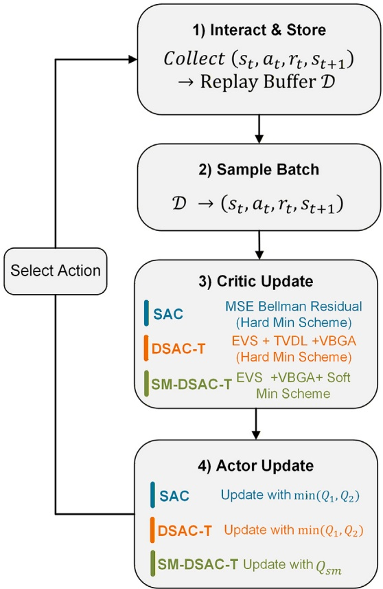
Fig. 5. Workflow of SM-DSAC-T.
Third, the Soft-Min operator does not amplify the discrepancy between two sets of critic estimates. Let and denote two possible pairs of twin-critic estimates for the same state-action pair, where the hat notation represents a perturbed or alternative critic estimate used for comparison. Since the derivative weights of the Soft-Min operator are non-negative and sum to one, the operator is 1-Lipschitz continuous under the supremum norm:
which means that the variation in the Soft-Min target is bounded by the maximum variation in the two critic estimates.
Based on this property, the stability of the Bellman critic evaluation step can be further characterized. Define as the Bellman evaluation operator that employs the Soft-Min critic target under a fixed policy For two critic functions and let ∞ denote the maximum absolute difference over all state-action pairs and both critic estimates. Under the same fixed policy, the reward term and the entropy term are identical; consequently, the only source of difference between the two Bellman backups is the Soft-Min critic target itself. Therefore, under bounded rewards and the following inequality holds:
This confirms that the proposed Soft-Min modification preserves the contraction-related stability of the critic evaluation step. In summary, the Soft-Min operator introduces only a bounded approximation error while simultaneously improving the smoothness of the twin-critic selection within DSAC-T.
4 . Numerical results and analysis
This section presents a comprehensive evaluation and analysis of the performance of the proposed hierarchical reinforcement learning framework and the rationality of the energy management results. The experiments underpinning the analysis are conducted using Python (version 3.8.19) on a workstation equipped with a 13th-Generation Intel(R) Core(TM) i9-13900 K CPU and an NVIDIA GeForce RTX 4080 GPU.
4.1 . Test system and experimental settings
4.1.1 . Test system
Following the model formulation principles detailed in Section a power flow analysis model is developed for the traction network of a representative UK feeding zone. The proposed railway microgrid is integrated at the terminal station located at the farthest end of this feeding zone. This microgrid coordinates PV generation, local utility grid, and battery storage to provide operational support and scheduling flexibility to the traction network. The traction demand, PV generation, non-traction demand, and electricity tariff profiles adopted in the test system are shown in Fig. 6. Fig. 1 presents simplified schematic diagrams of the feeding zone and the railway microgrid, while Table 1 specifies the detailed configurations of the test systems.
4.1.2 . Experimental settings
Regarding the experimental data used in the simulation studies, the traction load profile is derived from the train timetable of the considered feeding zone. Although train schedules are generally fixed and do not change frequently, the actual power demand of each service may deviate from the timetable-based estimation due to variations in train operation. Therefore, a zero-mean Gaussian perturbation with a standard deviation of 10% is introduced to the power demand of each individual service at each simulation time step before aggregating the total traction load of the feeding zone. This setting helps to provide a more realistic representation of short-term operational uncertainty at the individual-train level and enhances the robustness of the proposed algorithmic framework. Based on [34], PV generation data are estimated based on the PV generation potential at the considered station’s location and the available installation area at the station. Finally, non-traction load data are sourced from historical demand records for a representative month at the station where the microgrid is integrated. All these data are compiled into a training set to train the proposed hierarchical reinforcement learning framework.
To empirically justify the 10% stochastic perturbation applied to the timetable-derived traction load, a verification was conducted using real GPS speed data collected from actual train operations in the railway section considered in this study. The measured GPS speed profile over a 30-min period was compared with the standard three-stage speed trajectory adopted in the traction-load calculation, which consists of acceleration, cruising, and deceleration phases. The corresponding comparison is depicted in Fig. 7. Using the same power calculation model, traction power demand was derived from both profiles and aggregated at a 30‑second resolution.
The comparison results, presented in Fig. 8, indicate that the model‑derived speed and power profiles generally capture the dominant operating characteristics of the GPS‑based data. Notably, 71.88% of the empirical power demand falls within a ±10% deviation band of the model-derived power. This finding supports the use of a 10% disturbance level as a reasonable representation of typical short-term tractionload uncertainty under normal operating conditions. Accordingly, the Gaussian noise adopted in this study is intended to reflect moderate operational deviations from the timetable‑based traction demand.
It should be noted that some operation-related uncertainties, such as passenger load variation and regenerative braking efficiency variation, are not explicitly modeled as independent random variables in this study. Regarding passenger load variation, normal variations in passenger weight are generally a secondary source of uncertainty affecting train power demand compared with the tare mass of the vehicle, and their impact can be partially reflected through the train-level traction power perturbation. For regenerative braking efficiency, an average fixed parameter is adopted in the current system-level energy management model. Under normal operating conditions, and when the traction network has sufficient absorption capability, the train-side regenerative conversion efficiency is primarily governed by the traction drive chain, braking control characteristics, and operating speed. A significant reduction in regenerative braking efficiency is more likely to occur under specific operating conditions, such as very low-speed braking, where mechanical braking may be partially involved. Thus, for the system‑level scheduling problem addressed here, a fixed average efficiency is a reasonable simplification, consistent with assumptions adopted or discussed in previous railway energy studies [35,36]. Overall, the proposed uncertainty model should be interpreted as a simplified representation of typical short‑term operational variability under normal conditions.
Table 1
Parameter setting for the proposed Model.
| Parameters | Parameters |
| Name | Symbol | Value | Unit | Name | Symbol | Value | Unit |
| System Configuration |
| Traction power limit |
| 10,000 | kW | Local power limit |
| 800 | kW |
| Charging power limit |
| 2000 | kW | Discharging power limit |
| 2000 | kW |
| PV capacity |
| 500 | kW | Rated energy capacity |
| 2000 | kWh |
| Minimum SOC |
| 0.1 | | Maximum SOC |
| 0.9 | 一 |
| Train Parameters |
| Train unladen weight | | 138 | t | Train laden weight | | 161 | t |
| Regenerative efficiency | | 0.8 | | Traction efficiency | | 0.9 | |
| Max braking power | | 2000 | kW | Max traction power | | 2000 | kW |
| Traction Network Parameters |
| Catenary self-impedance |
| |
| Rail self-impedance |
| 0.080 + j0.630 Ω km−1 | |
| Mutual impedance |
|
| | | | | |
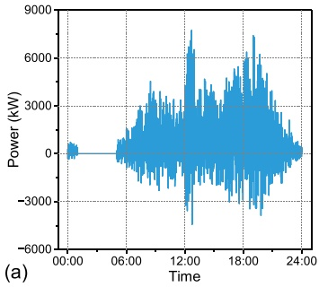
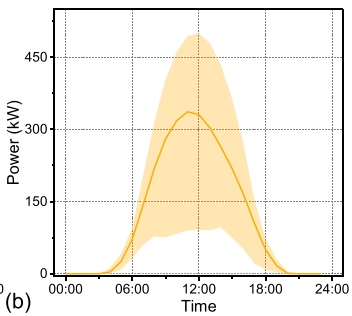
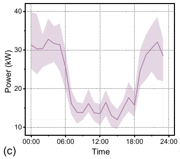
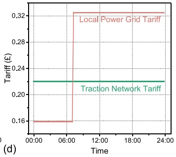
Fig. 6. Load demand, PV generation, and electricity tariff profiles in the test system. (a) Traction demand. (b) PV generation. (c) Non-traction demand. (d) Electricity tariff.
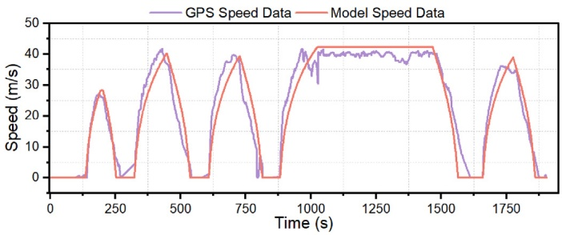
Fig. 7. Comparison between the measured GPS speed profile and the timetablebased standard three-stage speed trajectory adopted for power calculation.
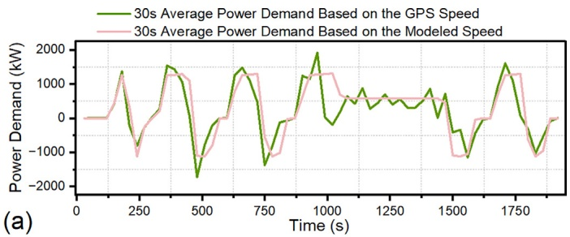
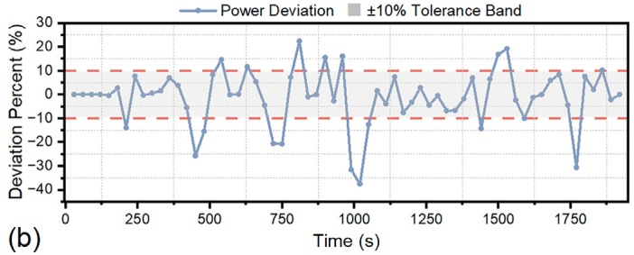
Fig. 8. GPS-based empirical verification of the traction-load uncertainty. (a) comparison of the 30-s average power demand calculated based on the measured operating speed and the model-adopted standard speed trajectory. (b) Visualization of the corresponding power deviation.
4.1.3 . Case study setup
To investigate the effectiveness of the proposed hierarchical reinforcement learning framework, four case studies are designed as follows:
Case 1: Without railway microgrid integration, the traction network is powered exclusively by the feeder station.
Table 2
Quantitative performance comparison of Various reinforcement learning Algorithms.
| Method |
𝐼 UAR |
𝐼 MER |
𝐼 QR |
𝐼 (0.2) CVaR |
| SM-DSAC-T |
-4204.96 |
-3952.97 |
118.45 |
-4788.51 |
| DSAC-T |
-4262.39 |
-4004.21 |
139.03 |
-4851.11 |
| SAC |
-4299.84 |
-3959.34 |
387.14 |
-4953.19 |
| TD3 |
-4873.78 |
-4272.12 |
586.21 |
-5874.38 |
| DDPG |
-4508.19 |
-4300.09 |
148.29 |
-4875.09 |
Table 3
Convergence Statistics of the power flow Solver.
| Metric |
Value |
| Convergence tolerance |
1 × 10-5 |
| Maximum iteration number |
100 |
| Convergence rate |
100% |
| Average iteration number |
5.025 |
| Maximum observed iteration number |
8 |
| Maximum final current mismatch |
9.84 × 10-6 |
Case 2: With railway microgrid integration, the traction network operates with a pre-defined voltage reference range of 24.5 kV to 25.2 kV.
Case 3: With railway microgrid integration, the traction network operates with a pre-defined voltage reference range of 23.5 kV to 26 kV.
Case 4: Implement the proposed hierarchical approach. The upperlevel agent dynamically sets the voltage reference limits, selecting an upper bound within 25.2–26 kV and a lower bound within 23.5–24.5 kV. Following this, the lower-level agent carries out energy scheduling according to the specified voltage range.
Subsequent simulations are conducted to compare these case studies to validate the effectiveness of the proposed framework. It should be noted that the voltage range is selected based on a comprehensive evaluation of three key aspects: the feeding zone’s voltage profile, the available battery power and capacity, and the system’s responsiveness to voltage fluctuations caused by traction loads and regenerative braking.
4.1.4 . Numerical settings and convergence of the power flow solver
To ensure the numerical reliability of the traction power flow calculation, the convergence settings and iteration statistics of the Newton-Raphson solver are reported in this subsection. The iteration is terminated when the maximum current mismatch is below and the maximum number of iterations is set to 100. Table 3 summarizes the relevant parameter settings, together with the convergence performance of the power flow calculations obtained in the experiments based on the proposed framework. As shown in this table, all power flow calculations converged successfully, corresponding to a convergence rate of 100%. The average number of Newton-Raphson iterations is 5.025, while the maximum observed number of iterations is 8. In addition, the maximum final current mismatch is , which is below the prescribed convergence tolerance. These results confirm the numerical stability and convergence reliability of the adopted traction power flow solver under the operating conditions considered in this study.
To validate the performance of the proposed SM-DSAC-T method, four other reinforcement learning methods with similar learning mechanisms are integrated into the developed hierarchical energy management framework. These methods are then applied to the test system for a comparative performance analysis. The four algorithms used for comparison are DSAC-T [30], SAC [31], Twin Delayed Deep Deterministic Policy Gradient (TD3) [37], and Deep Deterministic Policy Gradient (DDPG) [38]. The main hyperparameter settings of these algorithms are summarized in Table 4.
Table 4
Method Hyperparameter Settings.
| Hyperparameter |
Value |
| Optimizer |
Adam (𝛽1 = 0.9, 𝛽2 = 0.99) |
| Network learning rate |
3 × 10-4 |
| Entropy learning rate |
3 × 10-4 |
| Discount factor (𝛾) |
0.99 |
| Activation function |
tanh |
| Replay buffer size |
1 × 106 |
| Mini-batch size |
384 |
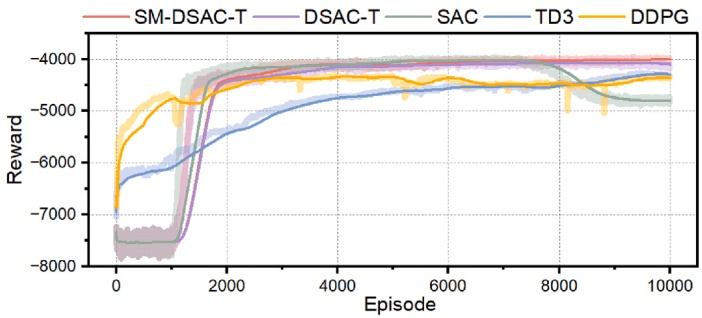
Fig. 9. Comparison of reward evolution during training.
Fig. 9 shows the evolution of the daily average reward over training episodes for both the proposed SM-DSAC-T and the four baseline algorithms. In the figure, the light-colored curves represent the raw reward values per episode, while the solid curves indicate the smoothed reward trends obtained by averaging every 500 episodes. From the reward trajectories, the proposed SM-DSAC-T achieves the best performance in terms of both exploration and exploitation. Although DSAC-T exhibits a similar convergence trend, it is outperformed by SM-DSAC-T in both peak reward and long-term stability. In contrast, the other baselines (SAC, TD3, and DDPG) suffer from slower convergence rates, significant reward oscillations, and performance degradation. These results confirm the superiority of SM-DSAC-T in convergence speed, reward stability, and overall learning performance within the proposed hierarchical energy management framework.
Table 2 presents a comparative analysis of four performance indicators for all evaluated algorithms, including the final average reward the maximum episode reward , the interquartile range and the Conditional Value at Risk evaluated at the 20th percentile . The results show that SM-DSAC-T outperforms the other methods across all indicators. Its highest average and maximum episodic rewards demonstrate effective exploration, while its lowest QR and highest CVaR values indicate greater training stability. Overall, these findings confirm that SM-DSAC-T achieves a more favorable trade-off between exploration and exploitation.
4.2.2 . Algorithmic and state-representation ablation analysis
To further clarify the contributions of the key learning components, this subsection presents an algorithmic and state-representation ablation analysis focusing on two elements: (i) the proposed Soft-Min operator in SM‑DSAC‑T, and (ii) the EMD‑derived features used in the upper‑level state representation.
First, the contribution of the proposed Soft-Min operator is evaluated through the comparison between SM-DSAC-T and the original DSAC-T. It should be noted that the original DSAC-T study has already provided systematic ablation experiments for its internal refinements, including Expected Value Substitution, Twin Value Distribution Learning, and Variance-based Critic Gradient Adjustment. Detailed ablation experiments for these components can be found in [30]. Since these components are inherited from the established DSAC-T framework rather than newly proposed in this work, repeating their internal ablation is not the focus of this paper. Instead, this study focuses on demonstrating the effectiveness of replacing the hard-minimum mechanism in Twin Value Distribution Learning with the proposed Soft-Min mechanism. The performance improvement of SM-DSAC-T over DSAC-T, as demonstrated in Fig. 9 and Table 2, directly reflects the contribution of the proposed Soft-Min mechanism.
Second, the contribution of the EMD-extracted state features is verified through a comparison between the proposed method and a variant devoid of EMD for state representation. In the proposed method, the upper-level agent observes the time index, battery energy level, microgrid voltage, traction load, and the decomposed traction voltage components. The EMD-derived features are incorporated to enable the upper-level agent to capture the recent multi-scale voltage fluctuations when generating adaptive voltage reference limits. For the non-EMD variant, these decomposed components are removed from the upper-level state representation, while all other settings remain unchanged. Fig. 10 compares the reward trajectories obtained with and without the EMD-derived upper-level state features. The results indicate that the proposed method achieves a slightly higher steadystate reward after convergence and exhibits a narrower fluctuation range. By contrast, the non-EMD variant shows more pronounced reward oscillations, especially in the later training stage. These observations indicate that the EMD-derived components provide supplementary multi‑scale information that aids in generating adaptive voltage limits, ultimately improving post‑convergence stability and reducing reward variability.
In this section, the effectiveness of the proposed hierarchical energy management framework is further evaluated through a comparative analysis of different cases. Specifically, Case 1 removes the integration of the railway microgrid and is used to assess the value of railway microgrid integration. Cases 2 and 3 retain the railway microgrid but replace the adaptive upper-level voltage reference generation with fixed voltage reference ranges, thereby simplifying the framework into a single-layer energy scheduling scheme. These two cases are designed to evaluate the contribution of the proposed hierarchical voltage reference mechanism. Case 4 corresponds to the complete proposed framework, where the upper-level agent dynamically determines the voltage reference limits and the lower-level agent conducts energy scheduling based on these limits.
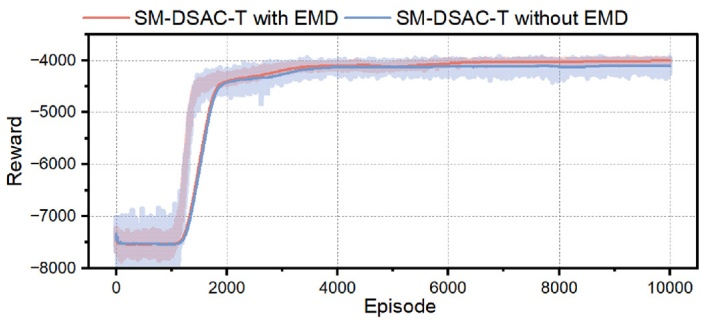
Fig. 10. Learning performance comparison of SM-DSAC-T with and without EMD-based state representation.
Table 5
Comparison of voltage regulation Performance.
|
Traction Voltage Ind |
ex |
|
| Case |
Voltage Deviation |
Max (kV) |
Min (kV) |
| Case 1 |
0.118 |
25.380 |
23.900 |
| Case 2 |
0.085 |
25.176 |
24.445 |
| Case 3 |
0.093 |
25.179 |
24.285 |
| Case 4 |
0.082 (30.5% ↓) |
25.176 (0.2 kV ↓) |
24.435 (0.54 kV ↑) |
Table 5 provides a quantitative comparison of voltage regulation performance. The proposed strategy (Case 4) clearly outperforms the baseline (Case 1), achieving the most stable voltage profile with a standard deviation (SD) reduced by 30.5% to 0.082. Moreover, Case 4 achieves comparable performance to Case 2, which adopts the narrowest fixed reference voltage range, in terms of both peak-voltage reduction and minimum-voltage elevation. This further demonstrates the effectiveness of the proposed framework in mitigating voltage fluctuations. Table 6 compares the energy scheduling performance across different cases. The proposed strategy (Case 4) proves to be the most economically effective, reducing OPEX by 34.7% and peak demand by 11.6% compared to the baseline (Case 1). This optimal economic performance is achieved with only a negligible average voltage reference violation of 0.18%, demonstrating the best overall trade-off between energy scheduling and voltage regulation.
Compared with the fixed-reference strategy in Case 2, the proposed framework reduces the daily operating cost from 3987.78 GBP to 3844.37 GBP, corresponding to an incremental cost reduction of approximately 3.6%, while further reducing the average voltage reference violation from 0.22% to 0.18%. Although this incremental cost saving is more moderate than the reduction relative to the no-microgrid case, it represents a recurring daily operating-cost saving and can become economically meaningful over long-term railway operation. Moreover, the additional complexity of the proposed HRL framework is mainly associated with the offline training stage, whereas the trained policy only requires neural-network forward propagation during online deployment. In addition, the proposed framework can also reduce the dependence on manually retuning fixed voltage reference ranges under different operating conditions.
Fig. 11 further demonstrates the superiority of the proposed hierarchical framework over single-layer frameworks with fixed voltage references. As shown, the proposed framework converges faster and achieves a higher, more stable reward than the two single-layer cases. This indicates that fixed reference settings may make the learning process less stable or reduce the coordination flexibility of the RL agents. A narrow voltage range leads to frequent and extensive battery charging and discharging, which complicates the agent’s interaction with the environment and increases the learning burden. Conversely, an excessively wide voltage range makes battery scheduling insensitive to voltage fluctuations, resulting in a poor trade-off between energy scheduling and voltage regulation. Thus, the core advantage of the proposed hierarchical framework lies in its dynamic voltage reference, which achieves a better balance between these two objectives.
Table 6
Comparison of energy scheduling Performance.
|
Cost (£) |
Peak Demand (kW) |
Peak Regen. (kW) |
Avg. Voltage Violation (%) |
| Case 1 |
5889.95 |
7717.79 |
-4431.21 |
- |
| Case 2 |
3987.78 |
6799.77 |
-2797.82 |
0.22 |
| Case 3 |
4000.17 |
6914.85 |
-2746.69 |
0.00 |
| Case 4 |
3844.37a |
6820.52b |
-2762.25c |
0.18 |
a 34.7% reduction compared with Case 1 (↓).
b 11.6% reduction compared with Case 1 (↓).
c 37.6% increase compared with Case 1 (↑).
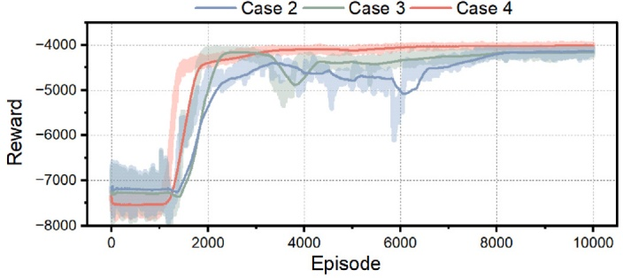
Fig. 11. Training process comparison between the hierarchical and single-layer energy management frameworks.
Overall, these framework-level ablation results confirm the distinct contribution of each major component in the proposed method. The comparison between Case 1 and the microgrid-integrated cases demonstrates that the railway microgrid provides the necessary flexibility for both voltage regulation and economic energy scheduling. The comparison of Cases 2 and 3 with Case 4 further shows that replacing fixed voltage references with adaptive upper-level voltage reference generation improves the coordination between battery operation and traction voltage regulation. Therefore, the superior performance of Case 4 is not solely attributed to the presence of the railway microgrid, but also to the hierarchical decision-making structure that dynamically adjusts the voltage reference limits according to system operating conditions.
4.4 . Comparison of the proposed framework with model-based and rule-based baselines
To further demonstrate the effectiveness of the proposed HRL framework beyond comparisons with other RL algorithms, this subsection compares the proposed method with two conventional baselines: a rolling-horizon MPC method and a rule-based energy management strategy. The MPC baseline represents a model-based optimization method, while the rule-based strategy serves as a practical heuristic control benchmark. To ensure consistency with the supervisory decision interval of the proposed HRL framework, the MPC benchmark is implemented in a rolling-horizon manner with a 15-min prediction window. The controllable units are optimized considering the same battery constraints, grid-exchange limits, electricity tariffs, and voltage-related penalties. Since directly embedding the complete nonlinear traction power flow model into MPC would result in a computationally demanding nonlinear optimization problem, a linear voltage-sensitivity approximation is used inside the MPC optimizer. Specifically, the nonlinear power flow model is first used to obtain the base-case hub voltage and the local voltage sensitivity with respect to the controllable power injection. The optimized action is then evaluated using the same nonlinear traction power flow model to ensure a fair comparison. To examine the influence of forecast uncertainty, three MPC cases are considered, namely MPC with perfect forecast, MPC with 5% forecast error, and MPC with 10% forecast error. The implementation details and relevant parameter configurations for the rule-based baseline are drawn from [10].
The comparison results are summarized in Table 7. Among all tested methods, the MPC with perfect forecasts achieves the lowest operating cost—marginally below that of the proposed HRL method. However, this MPC variant relies on ideal future information and produces a higher voltage standard deviation than the proposed strategy. This can be attributed to the MPC benchmark’s use of a linear voltagesensitivity approximation to maintain online tractability, which limits its ability to accurately capture the fully nonlinear traction-voltage response. In contrast, reinforcement learning benefits from its offlinetraining and online-deployment paradigm. It is trained offline within the complete nonlinear simulation environment while still delivering desirable voltage management performance during testing and execution. Furthermore, when forecast errors are introduced, MPC’s operating cost increases and surpasses that of the HRL method, indicating that MPC’s effectiveness is more heavily dependent on forecast accuracy. Compared with the rule-based strategy, the proposed strategy further reduces operating costs and enhances voltage stability, confirming that simple threshold-based rules are insufficient for coordinating economic operation with traction-voltage regulation. Overall, the proposed HRL framework achieves a favorable balance between operating cost and voltage stability relative to both conventional model-based optimization and rule-based baselines.
Comparison of the proposed framework with Model-Based and Rule-Based Baselines.
| Method | Cost (£) | Voltage SD | Min Voltage (kV) | Peak Demand (kW) |
|
| Proposed HRL | 3844.37 | 0.082 | 24.435 | 6820.52 |
| MPC-perfect | 3780.69 | 0.097 | 24.454 | 6767.37 |
| MPC-5% | 3875.27 | 0.098 | 24.454 | 6767.37 |
| MPC-10% | 3967.84 | 0.097 | 24.321 | 6855.19 |
| Rule-based | 4092.60 | 0.109 | 24.454 | 6767.37 |
Note: MPC-perfect assumes perfect forecast information; MPC-5% and MPC-10% consider forecast errors in the prediction horizon.
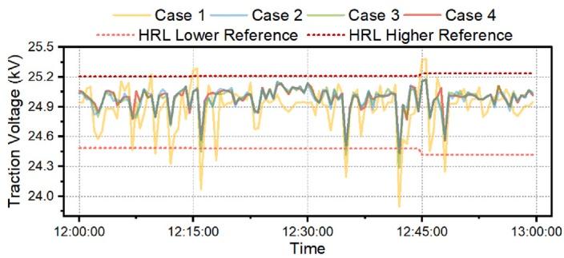
Fig. 12. Comparison of voltage regulation performance.
It should be noted that all comparative methods were evaluated using the same pre-generated stochastic disturbance realization to ensure a fair paired comparison. For MPC-perfect, MPC-5%, and the rule-based strategy, the peak grid net demand and the corresponding minimum hub voltage occurred at the same critical time step. At this time step, all three methods discharged the BESS at its rated maximum power and therefore produced the same net power condition and power flow operating point. Nevertheless, their charging and discharging trajectories differed over the remaining daily intervals, resulting in different accumulated operating costs and full-day voltage standard deviations.
Fig. 12 presents a comparative analysis of voltage regulation performance for the four cases during a peak-hour period. Case 1, which operates without the railway microgrid, exhibits the most volatile voltage profile. While Case 3 reduces voltage fluctuations to some extent, its performance remains inferior to that of Case 2 and Case 4. Notably, Case 4 demonstrates slightly superior voltage regulation even when compared to Case 2, which employs a narrower fixed reference voltage range. The dashed lines in Fig. 12 represent the dynamic reference bounds in Case 4. As shown, the voltage limits are appropriately relaxed during periods of increased fluctuation (e.g., between 12:45 and 13:00). This adaptive mechanism enables Case 4 to respond more flexibly to disturbances, facilitating more effective policy adjustments and leading to improved overall performance.
Fig. 13 illustrates how the individual components of the railway microgrid contribute to traction voltage regulation. The blue shaded area represents the state of charge variation of the battery energy storage system. As shown, the battery actively participates in voltage support by adjusting its charging and discharging behavior. During certain peak load periods, the system also receives auxiliary support from the local power grid, as indicated by the green vertical bars. These results highlight the critical role that flexible resources within the railway microgrid play in maintaining traction voltage stability.
Fig. 14 presents the voltage regulation results over the entire day. As shown in this figure, the higher and lower voltage references vary according to the operating condition of the traction network. During periods with relatively moderate voltage deviations, the reference band becomes more restrictive, encouraging the lower-level agent to provide battery support for voltage regulation. However, when the voltage exhibits severe and rapid fluctuations, the reference band is appropriately relaxed. This does not indicate weakened voltage control; rather, it reflects a feasibility-aware supervisory strategy. Under highly volatile traction-load conditions, an overly narrow voltage reference band may be difficult for the lower-level agent to follow because of battery power and energy limits. Such infeasible references could lead to frequent cross-layer conflicts and negatively affect cooperative learning. Therefore, the learned upper-level policy adaptively balances voltage regulation requirements and practical controllability.
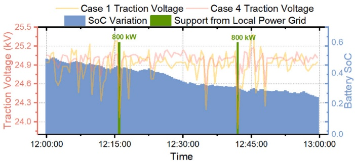
Fig. 13. Role of railway microgrid in voltage regulation.
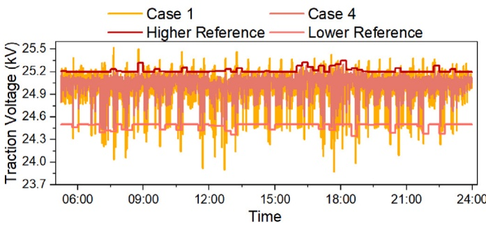
Fig. 14. Daily voltage regulation results.
Fig. 15 demonstrates the effectiveness of the proposed energy management framework in optimally coordinating multiple power sources to meet dynamic traction demand. As shown, the hierarchical scheduling strategy achieves a fine balance among battery utilization, grid power exchange, and system wide coordination of different power supplies, enabling reliable and efficient power delivery under highly dynamic traction load demand conditions.
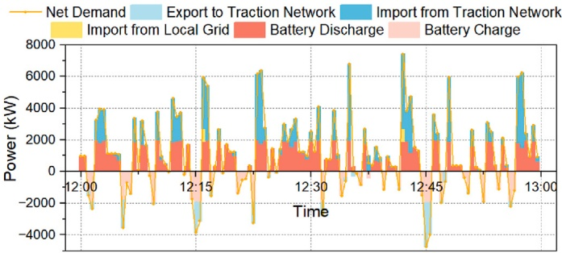
Fig. 15. Optimal scheduling of multiple power supply sources to meet the dynamic traction demands.
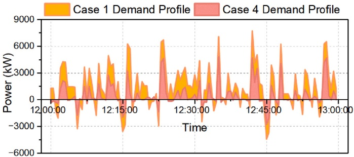
Fig. 16. Peak shaving and valley filling performance of the proposed energy management framework.
Fig. 16 provides a direct visual comparison of the demand profiles at the feeder station side, with and without the proposed energy management framework, explicitly illustrating the peak shaving and valley filling performance. The comparison shows that the proposed framework achieves a more balanced and flattened demand profile for the feeder station, which not only facilitates more economical and reliable operation of the traction power supply network, but also mitigates negative impact of irregular traction load on the upstream power grid operation. These results offer strong validation of the proposed framework’s efficacy in energy scheduling.
4.7 . Sensitivity analysis
4.7.1 . Sensitivity analysis to load and renewable variability
It should be noted that the traction network considered in this work corresponds to a UK railway terminal branch feeding section. Therefore, to align with typical operational conditions of the practical terminal lines and facilitate calculation, the preceding simulations adopted a medium train laden factor of 40% as the nominal condition. To further investigate the scalability of this study, this subsection extends the scope of the case studies to systematically evaluate the performance of the proposed framework under varying PV generation profiles and train load levels. Table 8 summarizes the simulation results for both summer and winter operating conditions, with train laden levels set to 20%, 40%, 60%, and 80%, respectively. A comparison of the PV generation profiles at the considered railway station for the summer and winter seasons is illustrated in Fig. 17.
As summarized in Table 8, Case 4 consistently achieves peak load reduction and improved traction voltage regulation conditions compared to Case 1 across all train laden levels. Specifically, the proposed framework reduces peak power demand by up to 11.6% and increases the minimum traction voltage at the terminal station node by up to 0.54 kV. These results demonstrate that integrating microgrids at the traction network terminal provides effective support to the railway power supply system, enhancing its ability to meet the growing power demand associated with railway electrification.
Furthermore, the proposed framework exhibits significant economic benefits and voltage fluctuation mitigation capabilities under various laden conditions, reaffirming its practical value. Regarding adaptability to different PV generation scenarios, the results in Table 8 confirm that the proposed framework achieves the expected performance in both summer and winter. Although renewable generation is lower in the winter scenario, the corresponding improvements are only marginally reduced.
4.7.2 . Sensitivity analysis to objective function weight settings
To examine the influence of the weighting coefficient 𝑤, a sensitivity analysis is conducted, as shown in Table 9. A smaller 𝑤 gives higher priority to cost minimization, whereas a larger 𝑤 emphasizes voltage deviation reduction. When , the lowest operating cost is achieved, but the voltage deviation and peak demand are relatively higher. Increasing 𝑤 to 10 slightly increases the cost from £3807.14 to £3844.37, while reducing the voltage deviation from 0.0840 to 0.0820 and lowering the peak demand from 6844.46 kW to 6820.52 kW. Further increasing 𝑤 to 100 only brings a small reduction in voltage deviation but causes a significant cost increase. When , both cost and voltage deviation deteriorate, indicating that an excessively large voltage weight may lead to an unbalanced scheduling strategy. Therefore, 𝑤 = 10 is selected in this study as a reasonable trade-off between economic operation and voltage fluctuation suppression.
Table 8
Sensitivity to train laden level and Seasonal PV Profiles.
| Summer Season |
| Laden (%) | 20 | 40 | 60 | 80 |
| Case | 1 4 | | 1 | | 1 | 4 | | 4 |
| Peak demand (kW) | 6496.90 | 5769.42 | 7717.79 | 6820.52 | 8825.44 | 7992.98 | 9939.33 | 9063.59 |
| Min traction voltage (kV) | 24.12 | 24.50 | 23.90 | 24.44 | 23.67 | 24.07 | 23.43 | 23.94 |
| OPEX (£) | 3913.32 | 2574.24 (34.2% ↓) | 5889.95 | 3844.37 (34.7% ↓) | 7489.34 | 4851.14 (35.2% ↓) | 10,069.80 | 7442.92 (26.1% ↓) |
| Voltage variance | 0.076 | 0.052 | 0.118 | 0.082 | 0.155 | 0.100 | 0.202 | 0.146 |
| Laden (%) | Winter Season |
| 20 | 40 | | | 60 | | 80 | |
| Case | 1 | 4 | 1 | 4 | 1 | 4 | 1 | 4 |
| Peak demand (kW) | 6496.90 | 5902.42 | 7717.79 | 6973.52 | 8825.44 | 8090.16 | 9939.33 | 9259.39 |
| Min traction voltage (kV) | 24.12 | 24.50 | 23.90 | 24.40 | 23.67 | 24.02 | 23.43 | 23.90 |
| OPEX (£) | 3913.32 | 2694.16 (31.2% ↓) | 5889.95 | 3994.37 (32.2% ↓) | 7489.34 | 4943.53 (33.9% ↓) | 10,069.80 | 7549.13 (25.0% ↓) |
| Voltage deviation | 0.076 | 0.059 | 0.118 | 0.083 | 0.155 | 0.109 | 0.202 | 0.150 |
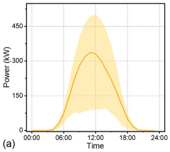
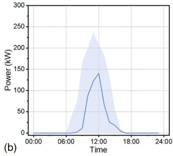
Fig. 17. PV generation potential at the considered railway station. (a) is for summer months and (b) is for winter months.
Table 9
Sensitivity Analysis of the weighting coefficient 𝑤.
| 𝑤 |
Cost (£) |
Voltage Deviation |
Peak Demand (kW) |
Min. Voltage (kV) |
| 1 |
3807.14 |
0.0840 |
6844.46 |
24.420 |
| 10 |
3844.37 |
0.0820 |
6820.52 |
24.435 |
| 100 |
4304.26 |
0.0790 |
6777.24 |
24.446 |
| 1000 |
6463.76 |
0.1325 |
7056.49 |
24.380 |
4.7.3 . Sensitivity analysis of the smoothing parameter 𝛽
To further evaluate the influence of the smoothing parameter 𝛽 of SM-DSAC-T, a sensitivity analysis is conducted, and the results are reported in Table 10. Several candidate values of 𝛽 are tested under the same training configuration. As shown in Table 10, the proposed SM-DSAC-T maintains relatively stable performance within the tested range of 𝛽. When , the Soft-Min operator provides relatively strong smoothing, resulting in the lowest average reward, the largest interquartile range, and the poorest CVaR value. This indicates that excessive smoothing may weaken the distinction between the two critic estimates and lead to conservative value estimation. As 𝛽 increases from 0.2 to 0.6, the average reward improves, suggesting that an appropriate reduction in smoothing strength can improve learning performance. Among the tested values, achieves the best while achieves the best the lowest and the best . Since the difference in between and is relatively small, while provides better learning stability and risk robustness, is selected as the final setting for the proposed Soft-Min operator in this study.
Table 10
Sensitivity Analysis of the smoothing parameter 𝛽.
| 𝛽 |
𝐼𝑈𝐴𝑅 |
𝐼𝑀𝐸𝑅 |
𝐼𝑄𝑅 |
𝐼𝐶𝑉𝑎𝑅(0.2) |
| 0.2 |
-4268.94 |
-3975.75 |
321.95 |
-4958.84 |
| 0.4 |
-4204.96 |
-3952.97 |
118.45 |
-4788.51 |
| 0.6 |
-4186.94 |
-3974.03 |
186.13 |
-4815.98 |
| 0.8 |
-4240.45 |
-4001.44 |
121.25 |
-4844.12 |
| 1.0 |
-4220.28 |
-4006.43 |
216.12 |
-4850.05 |
4.7.4 . Sensitivity analysis under different BESS capacities and feeder impedance levels
To further examine the influence of key system-dependent parameters on the proposed framework, a sensitivity analysis is conducted with respect to two representative system-dependent parameters, namely the BESS capacity and the feeder impedance. The proposed HRL-based strategy, denoted as Case 4, is compared with Case 2, which adopts a fixed narrow voltage-reference band. In the BESS sensitivity test, the BESS capacity is increased to 4 MW/4 MWh and 6 MW/6 MWh. In the impedance sensitivity test, the feeder impedance is scaled to 0.5𝑍 and 2𝑍 with respect to the original network setting. The corresponding results are summarized in Table 11.
As shown in Table 11, the relative advantage of the proposed HRL framework depends on both the available BESS flexibility and the electrical strength of the traction network. Increasing the BESS capacity reduces the operating cost for both cases, but the advantage of HRL does not increase monotonically with storage size. For example, when the BESS capacity is 4 MW/4 MWh, Case 2 achieves a lower cost, while Case 4 provides a slightly lower voltage standard deviation. When the BESS capacity is increased to 6 MW/6 MWh, Case 2 achieves a slightly lower cost and also gives a lower voltage standard deviation. Regarding the sensitivity to feeder impedance, when the feeder impedance is reduced to 0.5𝑍, the network becomes electrically stronger and the fixed narrow voltage-reference strategy provides better performance. In contrast, when the feeder impedance is increased to 2𝑍, Case 4 reduces both the operating cost and the voltage standard deviation compared with Case 2, indicating that the adaptive reference-band mechanism is more beneficial when the voltage is more sensitive to local power injection. These results suggest that the proposed HRL framework is more suitable for systems with noticeable voltage sensitivity and limited BESS capacity, while its relative advantage may become less significant when the network is electrically strong or when the BESS capacity is sufficiently large.
Table 11
Sensitivity Analysis under different BESS Capacities and feeder impedance Levels.
| Scenario | Cost (£) | Voltage SD |
| Case 4 | Case 2 | Case 4 | Case 2 |
| BESS (4 MW/4 MWh) | 2471.51 | 2385.51 | 0.072 | 0.074 |
| BESS (6 MW/6 MWh) | 1859.82 | 1805.67 | 0.077 | 0.072 |
| Feeder impedance (0.5Z) | 3894.43 | 3825.06 | 0.052 | 0.050 |
| Feeder impedance (2Z) | 3958.55 | 3994.43 | 0.184 | 0.199 |
4.8 . Scalability and applicability analysis
The proposed framework is formulated in a generic energymanagement form and is not inherently restricted to a specific AC or DC microgrid topology. This is because the learning-based control structure is established based on the interaction between the energy management agents and the railway power supply environment through measurable states, control actions, and operational constraints. For different AC or DC microgrid configurations, the microgrid-side model, power balance relationship, and operational constraints can be adjusted according to the electrical characteristics of the integrated microgrid. Similarly, as long as the interaction environment is reconstructed according to the electrical characteristics of the target railway system, including the formulation of the corresponding traction power flow equations and the redefinition of the objectives and constraints, the proposed hierarchical control structure can be extended to different types of railway electrification systems. In this study, the proposed method is implemented and validated on a 25-kV AC railway power supply section. Hence, when extending it to a DC railway system, the AC traction power flow model should be replaced with an appropriate DC traction network model, and the agents should be retrained under the corresponding operational constraints.
5 . Conclusion and discussion
This paper proposes a hierarchical reinforcement learning-based energy management framework to address the challenges of voltage instability and energy inefficiency in electrified railway systems. By integrating a railway microgrid at a weak node of the traction network and coordinating battery storage, renewable generation, and local grid resources, the proposed solution enables cost-effective operation to meet volatile traction power demand. Within the hierarchical architecture, the upper-level agent dynamically adjusts voltage reference boundaries to balance voltage stability with economic objectives, while the lower-level agent schedules energy flows based on cost-saving goals and upper-level directives. Case studies conducted on a representative UK feeding zone demonstrate the framework’s ability to significantly smooth voltage profiles, reduce power fluctuations, and improve energy efficiency. Notably, the coordinated scheduling of flexible resources reduces electricity procurement costs by up to 35.2% and decreases the traction voltage standard deviation at the weak node of the traction network by 30.5%. Comparisons with fixed-reference, rule-based, and rolling-horizon MPC baselines further demonstrate its capability to achieve a favorable trade-off between cost reduction and voltage regulation.
The main advantage of the proposed methodology is its ability to learn a feasibility-aware voltage supervision strategy from the nonlinear traction power flow environment, thereby reducing the reliance on manually tuned fixed voltage references. In addition, once trained offline, the agents can generate online control actions through neural-network forward propagation, which is beneficial for real-time implementation.
Nevertheless, the present study is still subject to several limitations. The case study is based on one representative UK feeding zone, and the adopted uncertainty model mainly represents typical short-term operational variability under normal conditions. Future work will extend the framework to larger railway networks with multiple weak nodes and railway microgrids, incorporate more comprehensive data-driven uncertainty models, and further validate the proposed strategy using real-time simulation or hardware-in-the-loop platforms.
CRediT authorship contribution statement
Shihao Zhao: Writing – original draft, Methodology, Investigation, Data curation, Conceptualization. Kang Li: Writing – review & editing, Supervision, Resources, Data curation. Brian Sweeney: Writing – review & editing, Validation, Resources. Davison Ross: Writing – review & editing, Resources, Investigation. Jianyu Zhang: Methodology, Formal analysis. Zhengrun Zhao: Writing – review & editing, Software.
Declaration of competing interest
The authors declare that they have no known competing financial interests or personal relationships that could have appeared to influence the work reported in this paper.
Acknowledgements
Shihao Zhao, Jianyu Zhang and Zhengrun Zhao would like to thank the China Scholarship Council for the financial support of their PhD studies at the University of Leeds. This work is partially supported by the Ofgem/UKRI SIF project ‘Resilient and Flexible Railway Multi-Energy Hub Networks for Integrated Green Mobility’, and UK EPSRC project ‘Networked Energy Hubs for Accelerating Decarbonization of Transport and Energy Sectors’.
Data availability
Data will be made available on request.
References
[1] Popovich ND, Rajagopal D, Tasar E, Phadke A. Economic, environmental and grid-resilience benefits of converting diesel trains to battery-electric. Nat Energy 2021;6(11):1017–25.
[2] Lin Y, Qin Y, Wu J, Xu M. Impact of high-speed rail on road traffic and greenhouse gas emissions. Nat Clim Change 2021;11(11):952–7.
[3] Zhao S, Li K, Yu J, Sweeney B. Optimal scheduling of railway power supply systems integrated with microgrids: a ccah-rl approach. IEEE Trans Smart Grid 2025;1.
[4] Deng H, Li Y, Tang C, Liu J, Yi Q, Wang Y, Wang P, Gao M. Green micro-grid for railway infrastructure. IEEE Trans Intell Transp Syst 2025;26(4):4346–64.
[5] Ge Y, Hu H, Chen J, Wang K, He Z. Combined active and reactive power flow control strategy for flexible railway traction substation integrated with ESS and PV. IEEE Trans Sustain Energy 2022;13(4):1969–81.
[6] Chen M, Jiang J, Peng F, Feng J, Chen Y. Rbe utilization improvement and negative sequence compensation for multiunit energy router in railway hub. IEEE Trans Transp Electrif 2024;11(1):2277–86.
[7] Chen Y, Chen M, Lu W, Egea-Àlvarez A, Xu L. Improving energy efficiency for suburban railways: a two-stage scheduling optimization in a rail-ev smart hub. eTransportation 2024;22:100366.
[8] Zhang WN, Xu Z, Hong YY, Bi ZQ. Onboard photovoltaic-energy storage system integration in high-speed trains: economic-environmental optimization via igwo-woa algorithm. Appl Energy 2025;400:126579.
[9] Chen M, Deng H, Chen Y, Peng G, Liang Z. Stochastic energy scheduling for urban railway smart grids considering distributed EVs charging and PV output uncertainty. IEEE Trans Intell Transp Syst 2025;26(6):7898–08.
[10] Chen J, Zhao Y, Wang M, Yang K, Ge Y, Wang K, Lin H, Pan P, Hu H, He Z, et al. Multi-timescale reward-based DRL energy management for regenerative braking energy storage system. IEEE Trans Transp Electrif 2025;11(3):7488–500.
[11] Li Z, Li X, Lu C, Ma K, Bao W. Carbon emission responsibility accounting in renewable energy-integrated DC traction power systems. Appl Energy 2024;355:122191.
[12] Chinomi N, Tian Z, Yang N, Kano N, Song K, Jiang L. Analysis of modeling and performance for PV and energy storage integration in suburban railways. Control Eng Pract 2025;157:106252.
[13] EN, B, 50163: 2004+ a2: 2020. Railway Applications. Supply voltages of traction systems; 2020.
[14] Lin L, Sun T, Fan M, You F, Huang Y. An adaptive power-voltage hierarchical control based on improved consensus algorithm for DC traction power supply system. Electr Power Syst Res 2025;245:111642.
[15] Wu T, Wang J, Zhao T, Zhou A, Chowdhury B, Cox R. Event-based hybrid bi-level energy management and control framework of networked microgrid. IEEE Trans Smart Grid 2024;16(2):1351–65.
[16] Sun X, Qiu J, Tao Y, Liu H, Zhao J. Customized coordinated voltage regulation and voyage scheduling for all-electric ships in seaport microgrids. IEEE Trans Sustain Energy 2024;15(3):1515–27.
[17] Vijayan V, Mohapatra A, Singh SN, Dewangan CL. An efficient modular optimization scheme for unbalanced active distribution networks with uncertain EV and PV penetrations. IEEE Trans Smart Grid 2023;14(5):3876–88.
[18] Meng H, Jia H, Xu T, Sun J, Wang R, Wang J. Trading mechanism of distributed shared energy storage system considering voltage regulation. Appl Energy 2024;374:123904.
[19] Zhao S, Li K, Yin M, Yu J, Yang Z, Li Y. Transportable energy storage assisted post-disaster restoration of distribution networks with renewable generations. Energy 2024;295:131105.
[20] Alamolhoda A, Ebrahimi R, Moghaddam MS, Ghanbari M. Integrated load and energy management in active distribution networks featuring prosumers based on PV and energy storage systems. J Mod Power Syst Clean Energy 2024;12(6): 1869–79.
[21] Zhao S, Li K, Yu J, Xing C. Scheduling of futuristic railway microgrids-a fra-pruned twins-actor DDPG approach. Energy 2024;134089.
[22] Guan Y, Ma W, Che L, Shahidehpour M. Model-based safe reinforcement learning for active distribution network scheduling. IEEE Trans Smart Grid 2025;16(3): 2375–88.
[23] Xing C, Li K, Su J. Thermal constrained energy optimization of railway co-phase systems with ESS integration—an FRA-pruned DQN approach. IEEE Trans Transp Electrif 2022;9(4):5122–39.
[24] Jiang K, Tian Z, Wen T, Song K, Hillmansen S, Ochieng WY. Collaborative optimization strategy of hydrogen fuel cell train energy and thermal management system based on deep reinforcement learning. Appl Energy 2025;393: 126057.
[25] Yin M, Li K, Yu J. A data-driven approach for microgrid distributed generation planning under uncertainties. Appl Energy 2022;309:118429.
[26] Chinomi N, Tian Z, Yang N, Kano N, Jiang L. Analysis of energy efficiency and resilience for AC railways with solar PV and energy storage systems. IEEE Trans Ind Cyber-Phys Syst 2024;2:519–30.
[27] Kulworawanichpong T. Simplified Newton–Raphson power-flow solution method. Int J Electr Power Energy Syst 2010;32(6):551–8.
[28] Rilling G, Flandrin P, Goncalves P. On empirical mode decomposition and its algorithms. In: Proceedings of IEEE-EURASIP workshop on nonlinear signal and image processing NSIP-03; 2003.
[29] Chen Y, Chen M, Xu L, Liang Z. Chance-constrained optimization of storage and pfc capacity for railway electrical smart grids considering uncertain traction load. IEEE Trans Smart Grid 2023;15(1):286–98.
[30] Duan J, Wang W, Xiao L, Gao J, Li SE. Dsac-t: distributional soft actor-critic with three refinements. arXiv preprint arXiv:2310.05858. 2023.
[31] Haarnoja T, Zhou A, Abbeel P, Levine S. Soft actor-critic: off-policy maximum entropy deep reinforcement learning with a stochastic actor. In: International conference on machine learning, PMLR; 2018. p. 1861–70.
[32] Konda V, Tsitsiklis J. Actor-critic algorithms. Adv Neural Inf Process Syst 1999;12.
[33] Van Hasselt H, Guez A, Silver D. Deep reinforcement learning with double Qlearning. In: Proceedings of the AAAI conference on artificial intelligence, vol. 30; 2016.
[34] National renewable energy laboratory: pvwatts calculator. https://pvwatts.nrel.gov/pvwatts.php.
[35] Tian Z, Weston P, Zhao N, Hillmansen S, Roberts C, Chen L. System energy optimisation strategies for metros with regeneration. Transp Res C Emerg Technol 2017;75:120–35.
[36] Scheepmaker GM, Goverde RM. Energy-efficient train control using nonlinear bounded regenerative braking. Transp Res C Emerg Technol 2020;121:102852.
[37] Fujimoto S, Hoof HV, Meger D. Addressing function approximation error in actorcritic methods. In: International conference on machine learning, PMLR; 2018. p. 1587–96.
[38] Lillicrap TP, Hunt JJ, Pritzel A, Heess N, Erez T, Tassa Y, Silver D, Wierstra D. Continuous control with deep reinforcement learning. In: International conference on learning representations; 2016.